- Dates
- 20–22 October 2026 · Opening Tuesday 20 October, 5–8pm
- Venue
- 24 rue Chapon, 75003 Paris · Métro Arts et Métiers / Rambuteau
- Admission
- Free, no booking required
- Artists
- Jimmy Gardner · Allard van Hoorn · Quinn Lewis · Charlotte Tampol · Jessica Anne Schwartz · Wayne Pate
- Presented by
- New to the Wall Foundation
Press kit
About the exhibition
Every morning a gardener in the Jardin du Luxembourg resets the green metal chairs into a neutral grid. Over the day, Paris redraws them: two chairs that draw close and then drift apart, a single chair tracking the sun, a reader keeping an arm's length of distance. Nobody directs this choreography. Almost nobody sees it.
C.H.A.I.S.E.S. puts it in a room. Four scenarios observed in the garden over a year — the sun-worshipper, the lovers' spat, the reader, the gathering — are translated by six artists into sculpture, painting, drawing, kinetic scrolls, a sound performance played on a Sénat chair from the garden, and an installation in the Marais, on the eve of Art Basel Paris.
Images
Free for press use in connection with the exhibition, with the credit shown. Web-resolution files below; high-resolution files in the press folder or on request.

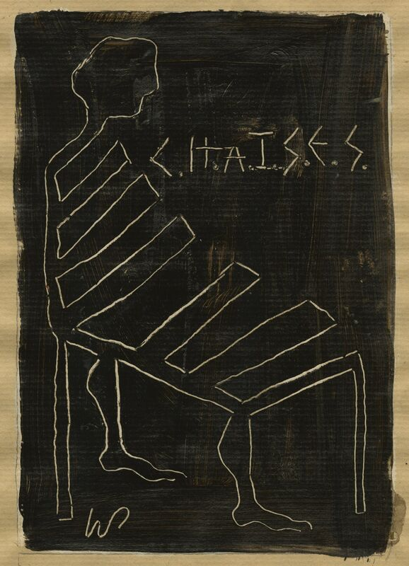

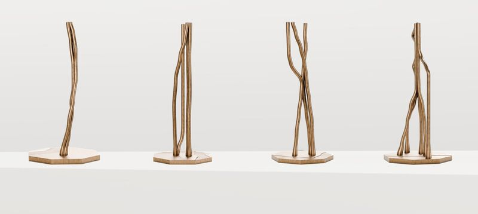

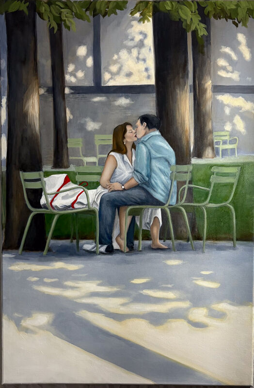

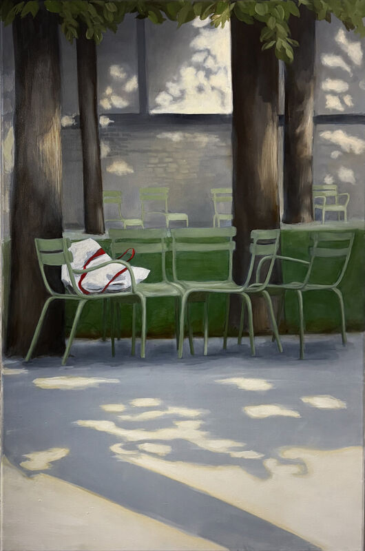

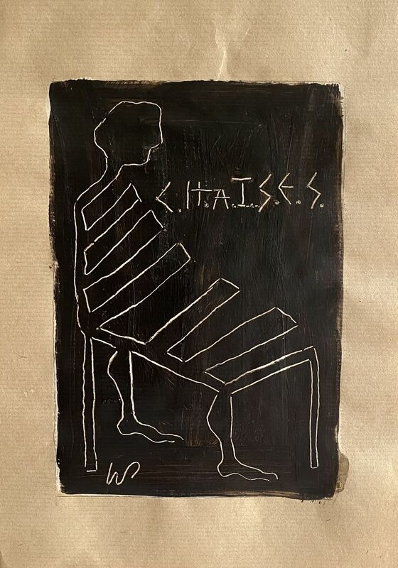

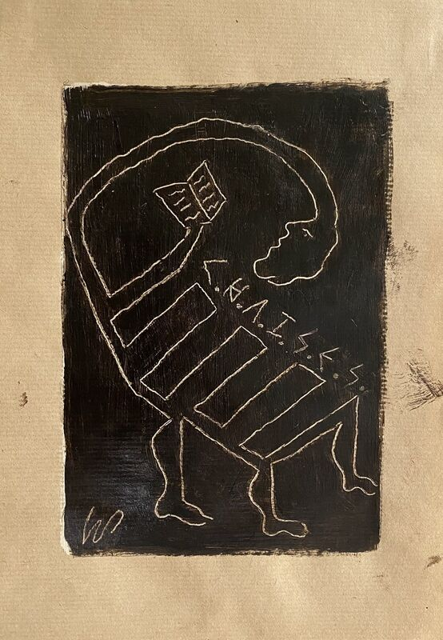

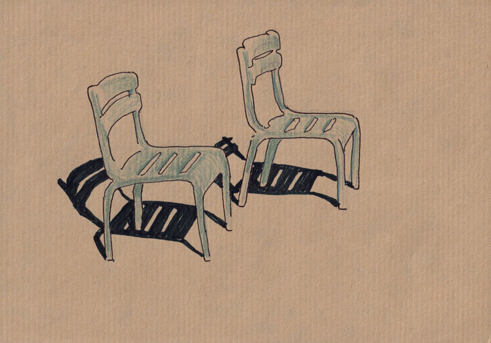

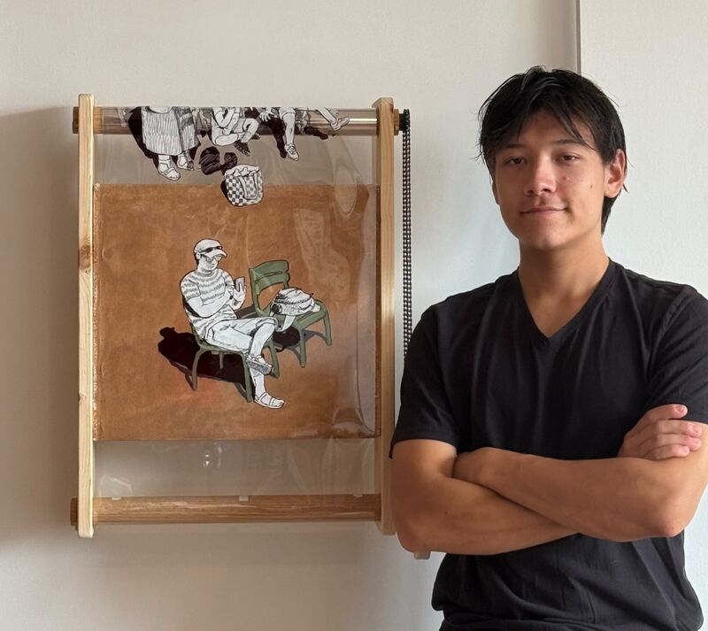

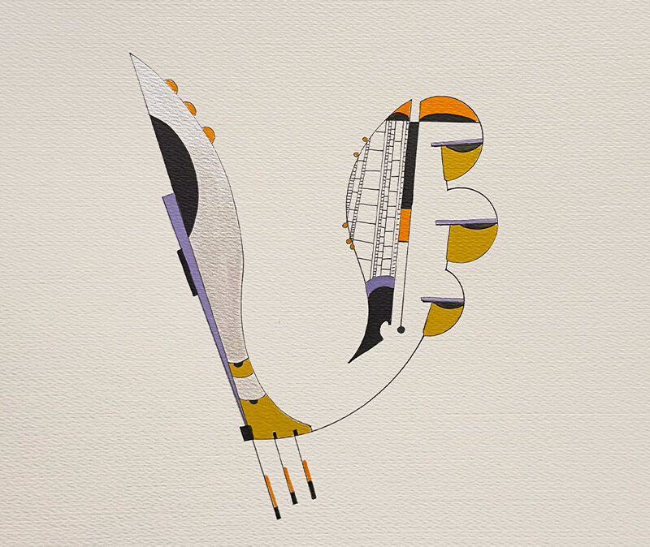

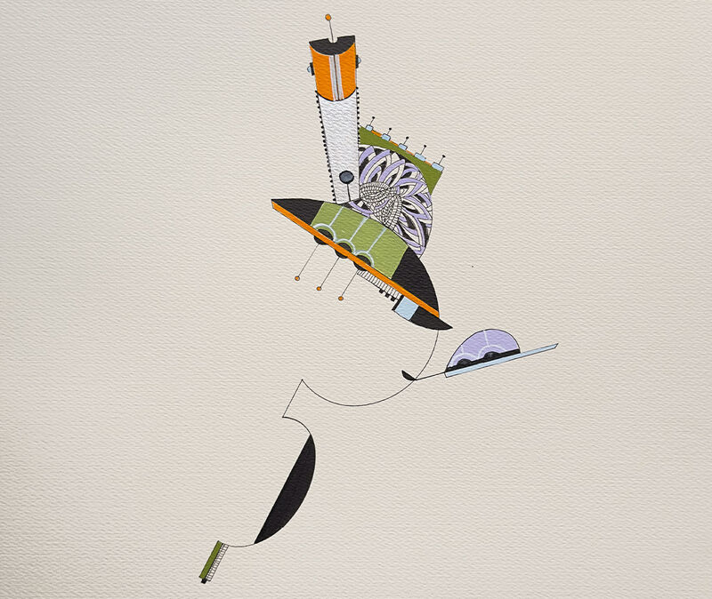

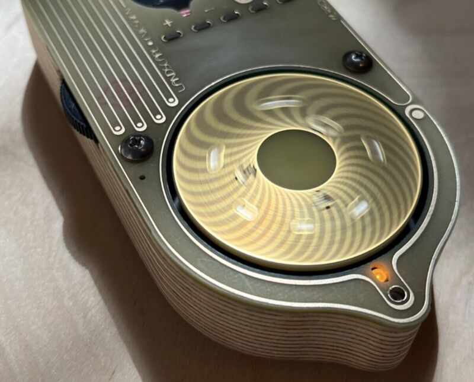

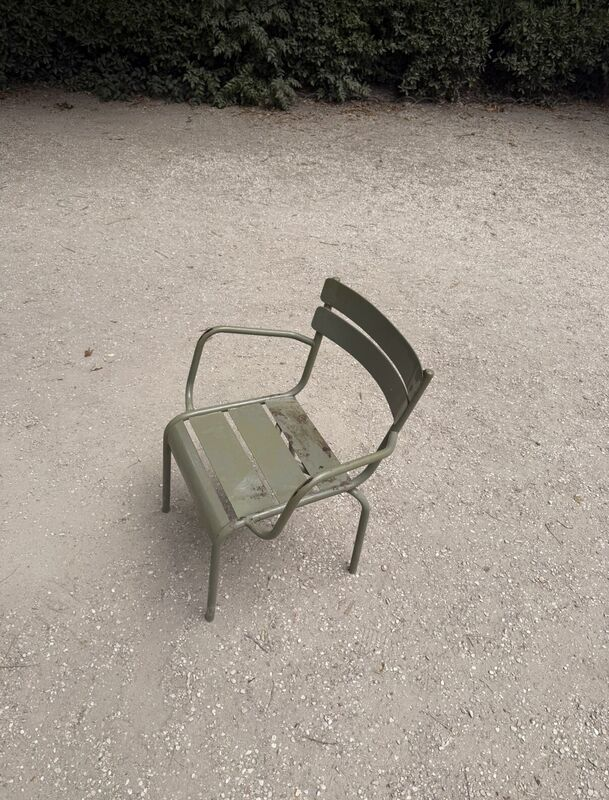